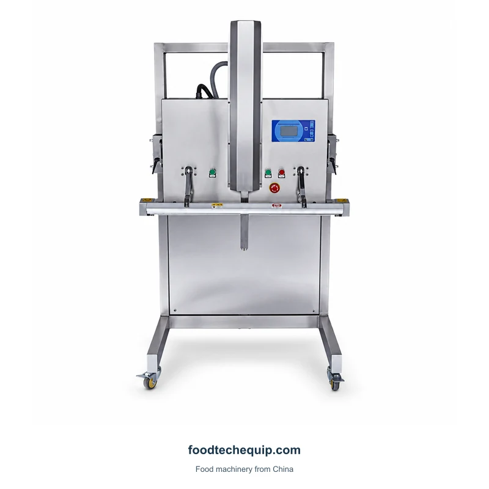

Vakuumverpackung
Vertikale Vakuumverpackungsmaschine mit Außenabsaugung
Vertikale Vakuumverpackungsmaschine mit Außenabsaugung und Rollenauflage für die Packung am Arbeitsplatz.
Maschine ansehenVergleichen Sie die Bauformen anhand eines gefüllten Beutels einschließlich Schale oder Auflage, falls vorhanden. Prüfen Sie bei Kammermaschinen den Platz um die Verpackung. Prüfen Sie bei Geräten mit Außenabsaugung die Beutelauflage am Siegelbalken. Vergleichen Sie anschließend Beschickung und Entnahme.
Vertikale Vakuumverpackungsmaschine mit Außenabsaugung und Rollenauflage für die Packung am Arbeitsplatz.
Maschine ansehen
Bodenstehende Vakuumverpackungsmaschine mit vorderem Auflagetisch und oberer Siegelschiene.
Maschine ansehen
Ein Tisch-Vakuumierer mit einer vorderen Auflagefläche und oberen Bedienelementen.
Maschine ansehen
Kippbare Vakuumverpackungsmaschine mit Außenabsaugung auf einem Unterbau mit Rollen.
Maschine ansehen
Eine Vakuumverpackungsmaschine für Reis- und Getreideverpackungen.
Maschine ansehen
Eine höhenverstellbare externe Vakuumverpackungsmaschine mit vorderem Arbeitsteil.
Maschine ansehen
Eine externe Vakuumverpackungsmaschine mit vertikalem Hub und vorderer Siegelschiene.
Maschine ansehen
Vertikale Vakuumverpackungsmaschine mit Außenabsaugung. Vergleichen Sie vor der Angebotsanfrage die elektrischen Anschlussdaten von QDZ-600F und VS600.
Maschine ansehen
Vakuumverpackungsmaschine für Kunststoffbeutel mit Außenabsaugung, Hubeinheit und vorderem Schweißbereich. Angegebene Versorgungsspannung 380 V.
Maschine ansehen
Eine Doppelkammer-Vakuumverpackungsmaschine mit zwei Arbeitsbereichen und einem beweglichen Deckel.
Maschine ansehen
Eine Einkammer-Vakuumverpackungsmaschine mit transparentem Deckel und Bedienelementen an der Vorderseite.
Maschine ansehen
Tisch-Vakuumverpackungsmaschine mit Außenabsaugung, vorderer Siegeleinheit und Auflagefläche.
Maschine ansehen
Vakuumverpackungsmaschinen mit Außenabsaugung in vertikaler Ausführung oder mit Hubeinheit.
Maschine ansehen
Eine bodenstehende externe Vakuumverpackungsmaschine mit Hebevorrichtung und vorderem Versiegelungsabschnitt.
Maschine ansehen
Eine Schrank-Vakuumverpackungsmaschine mit einer vorderen Kammertür und oberen Bedienelementen.
Maschine ansehen
Eine kontinuierliche Bandvakuumverpackungsmaschine mit Förderbandbeladung, einer Kammerabdeckung und erhöhten Bedienelementen.
Maschine ansehen
Eine Frontlader-Vakuumverpackungsmaschine mit oberen Bedienelementen und einem Edelstahlgehäuse.
Maschine ansehen
Eine Kompressions-Vakuumverpackungsmaschine mit einem Überkopfrahmen, Pneumatikzylindern und einem Schranksockel.
Maschine ansehen
Vertikale Vakuumverpackungsmaschine mit Außenabsaugung und verstellbarer Auflage für Kunststoffbeutel. Angegebenes Maschinengewicht 100 kg.
Maschine ansehen
Eine Kompressions-Vakuumverpackungsmaschine mit einem obenliegenden pneumatischen Rahmen.
Maschine ansehenVersuchen Sie es mit einem anderen Schlüsselwort oder löschen Sie Ihre Filter.
Geben Sie bei Kammeranordnungen die gesamten Abmessungen des verpackten Produkts und die Beladungsanordnung an. Beschreiben Sie bei externen Layouts die Unterstützung an der Dichtungsposition.
Geben Sie die Anforderungen an Beutelkonstruktion und Versiegelung zusammen mit tatsächlichen Packungsmustern an. Besprechen Sie etwaige Produkthaltbarkeitsanforderungen als Teil des umfassenderen Produkt- und Verpackungsprozesses.
| Auswahlbereich | Vergleichskriterien | Was ist bereitzustellen? |
|---|---|---|
| Kammer | Komplettpaket im Arbeitsbereich | Gefüllter Umschlag und Lademuster |
| Extern | Abstützung außerhalb der Dichtungsstrecke | Beutelöffnung und Stützhöhe |
| Gürtel oder Schrank | Paketzugriff und -übertragung | Abstand, Lade- und Sammelreihenfolge |
Die gefüllte Packung muss zur Arbeitsanordnung passen und beim Beladen gestützt bleiben. Besprechen Sie die Anforderungen an die Beutelmündung und den Verschluss zusammen mit dem gesamten Paketumschlag. Behandeln Sie jede einzelne Beutelverschließaufgabe als eigenen Prozessschritt.